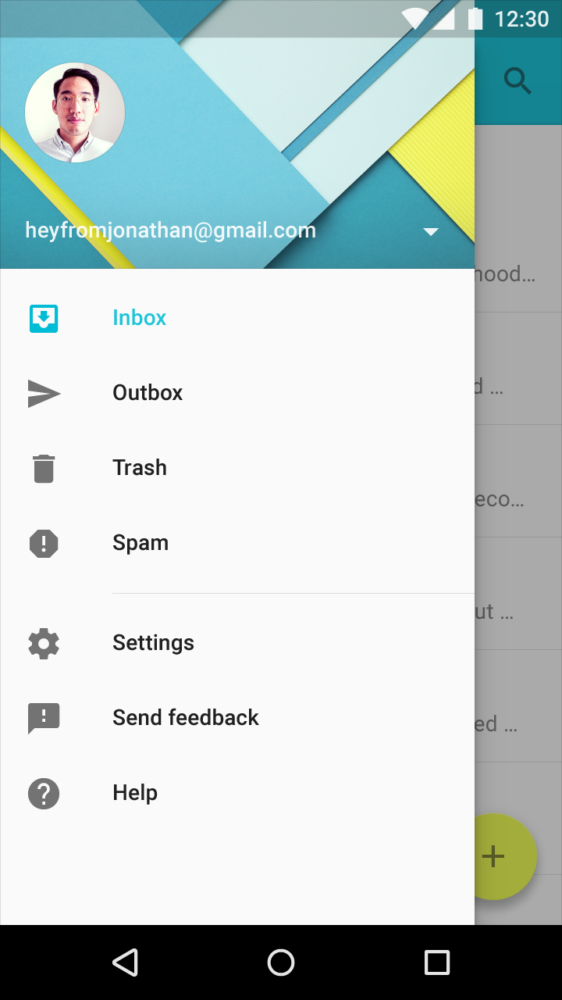
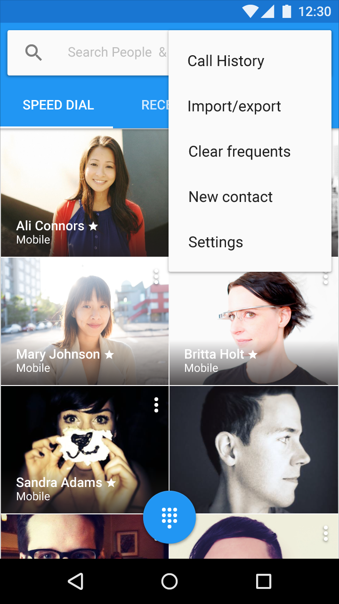

앱의 설정은 모두 “설정(Settings)” 레이블을 통해 접근되야 합니다. “옵션(Options)” 또는 “환경설정(Preferences, 선호도)” 과 같은 유의어를 사용하지 마십시오.
사이드 네비게이션
네비게이션 드로어와 같은 사이드 네비게이션이 존재한다면, 다른 모든 아이템의 아래에 “설정(Settings)”을 포함하십시오(도움말 & 피드백(Help & Feedback)은 제외).
네비게이션이 없는 앱
툴바 메뉴에서 모든 다른 아이템 아래에 설정(Settings)을 놓으십시오.

네비게이션 드로어에서 설정

툴바 메뉴에서 설정